용접기능사 (2011-07-31 기출문제)
1과목: 용접일반
1. 용접구주물의 제작도면에 사용하는 보조기능 중 RT는 비파괴시험 중 무엇을 뜻하는가?
- 초음파탐상시험
- 자기분말탐상시험
- 침투탐상시험
- 방사선투과시험
(정답률: 67%)

2. CO2가스 아크 용접의 보호가스 설비에서 히터장치가 필요한 가장 중요한 이유는?
- 액체가스가 기체로 변하면서 열을 흡수하기 때문에 조정기의 동결을 막기 위하여
- 기체가스를 냉각하여 아크를 안정하게 하기 위하여
- 동절기 용접시 용접부의 결함방지와 안전을 위하여
- 용접부의 다공성을 방지하기 위하여 가스를 예열하여 산화를 방지하기 위하여
(정답률: 65%)
3. 용접작업의 경비를 절감시키기 위한 유의사항 중 틀린 것은?
- 용접봉의 적절한 선정
- 용접사의 작업능률의 향상
- 용접지그를 사용하여 위보기 자세의 시공
- 고정구를 사용하여 능률향상
(정답률: 79%)
4. 용접 지그를 사용하여 용접했을 때 얻을 수 있는 장점이 아닌 것은?
- 구속력을 크게 하면 잔류 응력이나 균열을 막을수 있다.
- 동일 제품을 대량 생산 할 수 있다.
- 제품의 정밀도와 신뢰성을 높일 수 있다.
- 작업을 용이하게 하고 용접 능률을 높인다.
(정답률: 55%)
5. 피복 아크 용접용 기구 중 홀더(holder)에 관한 사용 중 옳지 않은 것은?
- 용접봉을 고정하고 용접전류를 용접케이블을 통하여 용접봉 쪽으로 전달하는 기구이다.
- 홀더 자신은 전기저항과 용접봉을 고정시키는 조(jaw) 부분의 접촉점에 의한 발열이 되지 않아야 한다.
- 홀더가 400호 이라면 정격 2차 전류가 400[A]임을 의미한다.
- 손잡이 이외의 부분까지 전연체로 감싸서 전격의 위험을 줄이고 온도 상승에도 견딜 수 있는 일명 안전홀더 즉 B형을 선택하여 사용한다.
(정답률: 65%)
6. 용접 시 구조물을 고정시켜줄 지그의 선택기준으로 잘못된 것은?
- 물체의 고정과 탈부착이 복잡해야 한다.
- 변형을 막아줄 만큼 견고하게 잡아 줄 수 있어야 한다.
- 용접 위치를 유리한 용접 자세로 쉽게 움질일 수 있어야 한다.
- 물체를 튼튼하게 고정시켜줄 크기와 힘이 있어야 한다.
(정답률: 88%)
7. CO2가스 아크 용접에서 솔리드 와이어에 비교한 복합와이어의 특징을 설명한 것중 틀린 것은?
- 양호한 용착금속을 얻을 수 있다.
- 스패터가 많다.
- 아크가 안정된다.
- 비드 외관이 깨끗하며 아름답다.
(정답률: 82%)
8. MIG용접에서 사용되는 와이어 송급 장치의 종류가 아닌 것은?
- 푸시 방식(push type)
- 풀방식(pull type)
- 펄스방식(pulse type)
- 푸시풀방식(push-pull type))
(정답률: 82%)
9. 침투 탐상 검사법의 장점이 아닌 것은?
- 시험 방법이 간단하다.
- 고도의 숙련이 요구되지 않는다.
- 검사체의 표면이 침투제와 반응하여 손상되는 제품도 탐상할 수 있다.
- 제품의 크기, 형상 등에 크게 구애 받지 않는다.
(정답률: 64%)
10. 가스 용접 토치의 취급상 주의사항으로 틀린 것은?
- 토치를 작업장 바닥이나 흙속에 방치하지 않는다.
- 팁을 바꿔 끼울 때는 반드시 양쪽밸브를 모두 열고 난 다음 행한다.
- 토치를 망치 등 다른 용도로 사용해서는 안된다.
- 작업 중 발생하기 쉬운 역류, 역화, 인화에 항상 주의하여야 한다.
(정답률: 90%)
11. 다음 중 발화성 물질이 아닌 것은?
- 카바이드
- 금속나트륨
- 황린
- 질산에텔
(정답률: 35%)
12. 철강계통의 레일, 차축 용접과 보수에 이용되는 테르밋용접법의 특징 설명으로 틀린 것은?
- 용접작업이 단순하다.
- 용접용 기구가 간단하고 설비비가 싸다.
- 용접시간이 길고 용접 후 변형이 크다.
- 전력이 필요없다.
(정답률: 74%)
13. 철강에 주로 사용되는 부식액이 아닌 것은?
- 염산 1 : 물 1의 액
- 염산 3.8 : 황린 1.2 : 물 5.0의 액
- 수소 1 : 물 1.5의 액
- 초산 1 : 물 3의 액
(정답률: 62%)
14. 용접의 결함과 원인을 각각 짝지은 것 중 틀린 것은?
- 언더컷 : 용접전류가 너무 높을 때
- 오버랩 : 용접전류가 너무 낮을 때
- 용입불량 : 이음설계가 불량할 때
- 기공 : 저수소계 용접봉을 사용했을 때
(정답률: 69%)
15. 연납의 대표적인 것으로 주석 40%, 납 60%의 합금으로 땜납으로서의 가치가 가장 큰 땜납은?
- 저융점 땜납
- 주석 - 납
- 납 - 카드뮵납
- 납 - 은납
(정답률: 71%)
16. 스터드 용접에서 페룰의 역할이 아닌 것은?
- 용융금속의 탈산 방지
- 용융금속의 유출 방지
- 용착부의 오염 방지
- 용접사의 눈을 아크로부터 보호
(정답률: 35%)
17. 점용접의 3대 요소가 아닌 것은?
- 전극모양
- 통전시간
- 가압력
- 전류세기
(정답률: 73%)
18. TIG용접에서 전극봉의 어느 한쪽의 끝부분에 식별용 색을 칠하여야 한다. 순 텅스텐 전극봉의 색은?
- 황색
- 적색
- 녹색
- 회색
(정답률: 44%)
19. 용접부의 형상에 따른 필릿 용접의 종류가 아닌 것은?
- 연속 필릿
- 단속 필릿
- 경사 필릿
- 단속지그재기 필릿
(정답률: 40%)
20. 서브머지드 아크 용접의 현상 조립용 간이 백킹법 중 철분 충진제의 사용목적으로 틀린 것은?
- 홈의 정밀도를 보충해 준다.
- 양호한 이면 비드를 형성시킨다.
- 슬래그와 용융금속의 선행을 방지한다.
- 아크를 안정시키고 용착량을 적게 한다.
(정답률: 48%)
21. 용접 자동화의 장점을 설명한 것으로 틀린 것은?
- 생산성 증가 및 품질을 향상시킨다.
- 용접조건에 따른 공정을 늘릴 수 있다.
- 일정한 전류 값을 유지할 수 있다.
- 용접와이어의 손실을 줄일 수 있다.
(정답률: 67%)
22. 스테인리스강을 TIG 용접시 보호가스 유량에 관한 사항중 옳은 것은?
- 용접시 아크 보호능력을 최대한으로 하기 위하여 가능한 한 가스 유량을 크게 하는 것이 좋다.
- 낮은 유속에서도 우수한 보호작용을 하고 박판용접에서 용략의 가능성이 적으며, 안정적인 아크를 얻을 수 있는 헬륨(He)을 사용하는 것이 좋다.
- 가스 유량이 과다하게 유출되는 경우에는 가스 흐름이 난류현상이 생겨 아크가 불안정해지고 용접 금속의 품질이 나빠진다.
- 양호한 용접 품질을 얻기 위해 79.5% 정도의 순도를 가진 보호가스를 사용하면 된다.
(정답률: 61%)
23. 다음 중 용접 전류를 결정하는 요소가 가장 관련이 적은 것은?
- 판(모재) 두께
- 용접봉의 지름
- 아크 길이
- 이음의 모양(형상)
(정답률: 37%)
24. 연강용 가스 용접봉은 인이나 황 등의 유해성분이 극히 적은 저탄소강이 사용되는데, 연강용 가스 용접봉에 함유된 성분 중 규소(Si)가 미치는 영향은?
- 강의 강도를 증가시키거나 연신율, 굽힘성 등이 감소된다.
- 기공은 막을 수 있으나 강도가 떨어진다.
- 강에 취성을 주며 가연성을 잃게 한다.
- 용접부의 저항력을 감소시키고 기공발생의 원인이 된다.
(정답률: 34%)
25. 피복 아크 용접용 기구에 해당되지 않는 것은?
- 주행 대차
- 용접봉 홀더
- 접지 클램프
- 전극 케이블
(정답률: 84%)
26. 산소용기의 내용적이 33.7 리터인 용기에 120kgf/cm2이 충전되어 있을 때, 대기압 환산용적은 몇 리터인가?
- 28.3
- 4044
- 40440
- 28030
(정답률: 78%)
27. 무부하 전압이 높아 전격위험이 크고 코일의 감긴 수에 따라 전류를 조정하는 교류용접기의 종류로 맞는 것은?
- 탭전환형
- 가동코일형
- 가동철심형
- 가포화리액터형
(정답률: 35%)
28. 다음 중 아크 절단의 종류에 속하지 않는 것은?
- 탄소아크 절단
- 플라스마 제트 절단
- 스카핑
- 아크에어 가우징
(정답률: 75%)
29. 200V용 아크용접기의 1차 입력이 150KVA일 때, 퓨즈의 용량은 얼마[A]가 적당한가?
- 65[A]
- 75[A]
- 90[A]
- 100[A]
(정답률: 74%)
30. 아세틸렌가스가 산소와 반응하여 완전연소 할 때 생성되는 물질은?
- CO, H2O
- CO2, H2O
- CO, H2
- CO2, H2
(정답률: 68%)
31. 가스용접에서 프로판 가스의 성질 중 틀린 것은?
- 연소할 때 필요한 산소의 양은 1 : 1 정도이다.
- 폭발한계가 좁아 다른 가스에 비해 안전도가 높고 관리가 쉽다.
- 액화가 용이하여 용기에 충전이 쉽고 수송이 편리하다.
- 상온에서 기체 상태이고 무색, 투명하여 약간의 냄새가 난다.
(정답률: 60%)
32. 가스절단에서 예열불꽃이 약할 때 나타나는 현상이 아닌 것은?
- 드래그 증가한다.
- 절단이 중단되기 쉽다.
- 절단속도가 늦어진다.
- 슬래그 중의 철 성분의 박리가 어려워진다.
(정답률: 49%)
33. 가스 용접에서 전진법과 비교한 후진법의 설명으로 맞은 것은?
- 열이용률이 나쁘다.
- 용접속도가 느리다.
- 용접변형이 크다.
- 두꺼운 판의 용접에 적합하다.
(정답률: 74%)
34. 피복제 중의 산화티탄을 약 35%정도 포함하였고 슬래그의 박리성이 좋아 비드의 표면이 고우며 작업성이 우수한 특징을 지닌 연강용 피복 아크 용접봉은?
- E4301
- E4311
- E4313
- E4316
(정답률: 69%)
35. 직류 아크 용접의 설명 중 올바른 것은?
- 용접봉을 양극, 모재를 음극에 연결하는 경우를 정극성이라고 한다.
- 역극성은 용입이 깊다.
- 역극성은 두꺼운 판의 용접에 적합하다.
- 정극성은 용접 비드의 폭이 좁다.
(정답률: 53%)
2과목: 용접재료
36. 다음 중 용접의 장점에 대한 설명으로 옳은 것은?
- 기밀, 수밀, 유밀성이 좋지 않다.
- 두께에 제한이 없다.
- 작업이 비교적 복잡하다.
- 보수와 수리가 곤란하다.
(정답률: 78%)
37. 가스가공에서 강제 표면의 홈, 탈탄층 등의 결함을 제거하기 위해 얇게 그리고 타원형 모양으로 표면을 깍아내는 가공법은?
- 가스 가우징
- 분말절단
- 산소창 절단
- 스카핑
(정답률: 82%)
38. 고셀룰로오스계 용접봉에 대한 설명으로 틀린 것은?
- 비드표면이 거칠고 스패터가 많은 것이 결점이다.
- 피복제 중 셀룰로오스가 20~30%정도 포함되어 있다.
- 고셀룰로오스계는 E4311로 표시한다.
- 슬래그 생성계에 비해 용접전류를 10~15% 높게 사용한다.
(정답률: 48%)
39. 직류 용접에서 아크쏠림(Arc blow)에 대한 설명으로 틀린 것은?
- 아크쏠림의 방지대책으로는 용접봉 끝을 아크 쏠림 방향으로 기우린다.
- 자기불림(Magnetic blow)이라고도 한다.
- 용접 전류에 의해 아크 주위에 발생하는 자장이 용접에 대해서 비대칭으로 나타나는 현상이다.
- 용접봉에 아크가 한 쪽으로 쏠리는 현상이다.
(정답률: 70%)
40. 구조용 부분품이나 제지용 롤러 등에 이용되며 열처리에 의하여 니켈-크롬주강에 비교될 수 있을 정도의 기계적 성질을 가지고 있는 저망간 주강의 조직은?
- 마텐자이트
- 펄라이트
- 페라이트
- 시멘타이트
(정답률: 37%)
41. 철강의 열처리에서 열처리 방식에 따른 종류가 아닌 것은?
- 계단 열처리
- 항온 열처리
- 표면경화 열처리
- 내부경화 열처리
(정답률: 36%)
42. 다음 중 강도가 높고 피로한도, 내열성, 내식성이 우수하여 베어링, 고급 스프링의 재료로 이용되는 것은?
- 쿠니얼 브론즈
- 콜슨 합금
- 베림률 청동
- 인청동
(정답률: 47%)
43. 탄소강의 용도에서 내마모성과 경도를 동시에 요구하는 경우 적당한 탄소 함유량은?
- 0.⑤ ~ 0.3% C
- 0.3 ~ 0.45% C
- 0.45 ~ 0.65% C
- 0.65 ~ 1.2% C
(정답률: 27%)
44. 주철 중에 유황이 함유되어 있을 때 미치는 영향중 틀린 것은?
- 유동성을 해치므로 주조를 곤란하게 하고 정밀한 주물을 만들기 어렵게 한다.
- 주조 시 수축률을 크게 하므로 기공을 만들기 쉽다.
- 흑연의 생성을 방해하고, 고온취성을 일으킨다.
- 주조응력을 작게 하고, 균열발생을 저지한다.
(정답률: 46%)
45. 일반적으로 성분 금속이 합금(Alloy)이 되면 나타나는 특징이 아닌 것은?
- 기계적 성질이 개선된다.
- 전기저항이 감소하고 열전도율이 높아진다.
- 용융점이 낮아진다.
- 내마멸성이 좋아진다.
(정답률: 40%)
46. 알루미늄에 대한 설명으로 틀린 것은?
- 내식성과 가공성이 우수하다.
- 전기와 열의 전도도가 낮다.
- 비중이 작아 가볍다.
- 주조가 용이하다.
(정답률: 72%)
47. 마그네슘 합금이 구조재료로서 갖는 특성에 해당하지 않는 것은?
- 비강도(강도/중량)가 작아서 항공우주용 재료로서 매우 유리하다.
- 기계가공성이 좋고 아름다운 절삭면이 얻어진다.
- 소성가공성이 낮아서 상온변형은 곤란하다.
- 주조시의 생산성이 좋다.
(정답률: 32%)
48. 다음 중 화학적인 표면 경화법이 아닌 것은?
- 침탄법
- 화염경화법
- 금속침투법
- 질화법
(정답률: 55%)
49. 연강보다 열전도율은 작고 열팽창계수는 1.5배 정도이며 염산, 황산 등에 약하고 결정입계 부식이 발생하기 쉬운 스테인리스강은?
- 페라이트계
- 시멘타이트계
- 오스테나이트계
- 마텐자이트계
(정답률: 48%)
50. 다음 가공법 중 소성가공이 아닌 것은?
- 선반가공
- 압연가공
- 단조가공
- 인발가공
(정답률: 53%)
3과목: 기계제도
51. 다음 입체도의 화살표 방향의 투상도로 가장 적합한 것은?
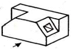
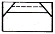
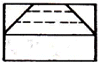
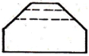
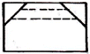
(정답률: 65%)
52. SS400로 표시된 KS 재료기호의 400은 어떤 의미인가?
- 재질 번호
- 재질 등급
- 최저 인장강도
- 탄소 함유량
(정답률: 77%)
53. 그림과 같은 외형도에 있어서 파단선을 경계로 필요로 하는 요소의 일부만을 단면으로 표시하는 단면도는?
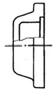
- 온 단면도
- 부분 단면도
- 한쪽 단면도
- 회전 도시 단면도
(정답률: 68%)
54. 다음 그림에서 축 끝에 도시된 센터 구멍 기호가 뜻하는 것은?
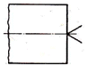
- 센터 구멍이 남아 있어도 좋다.
- 센터 구멍이 남아 있어서는 안된다.
- 센터 구멍을 반드시 남겨둔다.
- 센터 구멍의 크기에 관계없이 가공한다.
(정답률: 56%)
55. 그림과 같은 부등변 ㄱ 강형의 치수로 가장 적합한 것은?
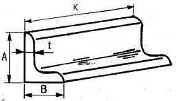
- L A × B × t - K
- LB ×t ×A - K
- LK ×t ×A - B
- LK ×A × t - B
(정답률: 60%)
56. 제시도나 물체를 도형 생략법을 적용해서 나타내려고 한다. 적용방법이 옳은 것은?(단, 물체의 뚫린 구멍의 크기는 같고 간격은 6mm로 일정하다.)
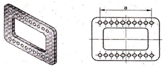
- 치수 a는 10 × 6(=60)로 기입 할 수 있다.
- 대칭기호를 사용하여 도형을 1/2로 나타낼 수 있다.
- 구멍은 반복 도형 생략법을 나타낼 수 없다.
- 구멍의 크기가 동일하더라도 각각의 치수를 모두 나타내어야 한다.
(정답률: 53%)
57. 전체 둘레 현장 용접의 보조기호로 맞는 것은?
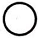
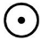
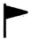
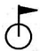
(정답률: 64%)
58. 선의 종류와 명칭이 바르게 짝지어진 것은?
- 가는 실선 - 중심선
- 굵은 실선 - 외형선
- 가는 파선 - 지시선
- 굵은 1점 쇄선 - 수준면선
(정답률: 63%)
59. 그림과 같은 입체의 화살표 방향 투상도로 가장 적합한 것은?
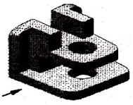
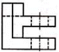
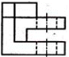
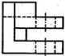
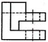
(정답률: 50%)
60. 밸브 표시기호에 대한 밸브 명칭이 틀린 것은?
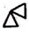
: 슬루스 밸브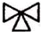
: 3방향 밸브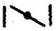
: 버터플라이 밸브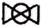
: 볼 밸브
(정답률: 50%)